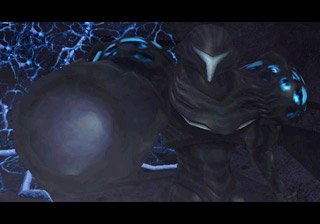

You open the door and
find yourself watching yourself.
No! it's Prime!! You glance behind her and see the baby metroid. So it
seems killing this thing will be an objective for your mission. Good
saves
the trouble of having to hunt it down. You charge your new beam and
start
firing. the copy returns fire and you both seem equally matched. AS the
hope of either one of you winning fades, you realize there is an easier
way to do this. you jump sideways and start blasting super missiles.
The Dark Samus continues to take it
while
still coming towards you. You finally can't take it any more so you
drop
to morph ball form and start dropping powerbombs. The Dark Samus walks
through
them and begins to smoke and shed her skin. she is practically
transparent
now. Should you fire at her with a Sonic Boom
(Super missiles combined with Annialator Beam.) or will you grab the metroid and run ?